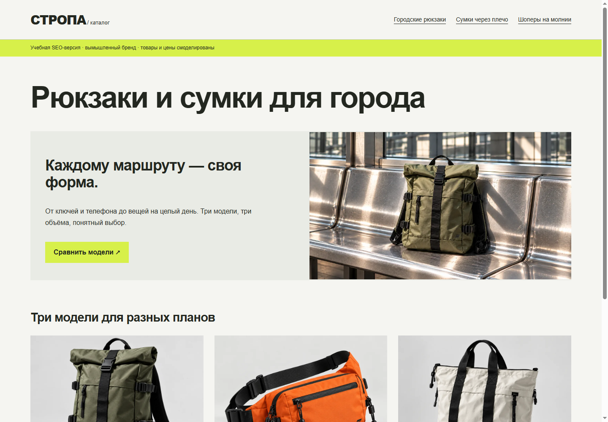

Техническое SEO · E-commerce
Из одного экрана —
в структуру сайта.
Магазин выглядел готовым для покупателя. Мы разобрали, что получает поисковый робот, и собрали отдельную HTML-витрину с понятными адресами и содержимым без JavaScript.
Аудит → внедрение → проверкаУчебный проект
До / содержимое через hash-маршруты
index.html#product/marshrut/oliveОдин HTML-файл. Пустой <main> до запуска JavaScript.
После / отдельные документы
Контент, ссылки и метаданные — сразу в HTML.
8страниц с контентом без JS
8 / 8уникальных title и description
3описания Product в JSON-LD
−97,7%байтов в семи изображениях*
* Суммарный размер 7 исходных PNG против 7 WebP шириной до 1000 px. Это размер файлов, а не замер скорости страницы.
Сначала — причины.
Потом — правки.
Задача: подготовить структуру магазина для дальнейшего SEO-запуска. Исходник сохранён без изменений; улучшения показаны в отдельной версии. Аудит ограничен локальными файлами и браузером.
| Участок | До | После |
|---|
| Адреса товаров | #product/… внутри одного документа | 3 HTML-страницы моделей, оба цвета на одной странице |
| Основной контент | Пустой main без JavaScript | 8 страниц читаются при отключённом JS |
| Метаданные | Title меняется в JS; description общий у проверенной главной и товара | Собственные title, description и H1 у каждой страницы |
| Категории | Кнопки фильтра без адреса категории | 3 категории с вводным текстом и ссылками на модели |
| Описание сущностей | JSON-LD отсутствует на проверенных экранах | 3 Product: модель, бренд, цвета и характеристики |
| Изображения | 7 крупных PNG — 14 076 659 байт | 7 WebP — 321 826 байт; дополнительно версии 500 px |
Не «JavaScript не индексируется», а конкретная техническая зависимость.Google умеет выполнять JavaScript. Проблема исходной реализации — маршруты через фрагменты и отсутствие основного контента до рендеринга. Отдельные HTML-документы убирают эту зависимость, но сами по себе не гарантируют индексацию.
Запрос → намерение → страница.
Семантика — рабочая гипотеза по ассортименту. Частотность, конкурентность и региональный спрос не измерялись. Не выдаём список фраз за исследование рынка.
Скачать полную карту: 8 кластеров, страницы и проверки до запуска ↓
Категории отвечают за тип товара, карточки — за модель, гид — за сравнение форматов. Цвета не размножают однотипные URL. Хлебные крошки и обычные HTML-ссылки связывают разделы.
Правки можно открыть,
а не просто прочитать.
Статическая версия работает с диска, сохраняет предметные изображения и ассортимент. С карточки можно перейти в исходный магазин и пройти прежний демонстрационный сценарий покупки.

Снимок браузера. SEO-версия — отдельная витрина, а не замена корзины или новый backend.
Что доказано.
Что ещё предстоит.
Вместо графика выдуманного трафика — чёткая граница между внедрёнными изменениями и задачами реального запуска.
Проверено локально
- Контент 8 страниц доступен без JavaScript.
- Title и description уникальны; по одному H1.
- Все 8 страниц достижимы ссылками с главной.
- Характеристики JSON-LD совпадают с данными моделей.
- Исходный магазин совпадает с сохранённой копией.
- Вёрстка и изображения проверены в Chrome при 1440 и 390 px.
Для реального запуска
- Утвердить ассортимент, домен, контакты и условия продажи.
- Назначить абсолютные canonical; собрать sitemap только для индексируемых URL.
- Снять demo-noindex после проверки реального контента; robots.txt должен позволять чтение страниц.
- Проверить HTTPS, статусы 200/404, настройки сервера.
- Пройти Rich Results Test; текущие Product без Offer и рейтингов не заявляются как rich-result-ready.
- Подключить Search Console и аналитику; измерить реальные Core Web Vitals и органические обращения.
Почему здесь noindex?Это вымышленный ассортимент без назначенного домена. Мы показываем внедрение, но не отправляем учебные товары в поиск. Canonical и sitemap оставлены в плане запуска, а не заполнены чужим или выдуманным рабочим адресом.
Материалы кейса
Можно проверить исходное состояние, логику исправлений и локальные результаты. Никаких заявлений о росте продаж, трафика или позиций.
Результат для портфолио
Аудит, который дошёл до кода.
Этот кейс показывает работу с техническим SEO: поиск причин, проектирование структуры, внедрение и проверку. Рост органики — отдельный этап после запуска реального сайта, а не цифра, которую можно дорисовать к макету.